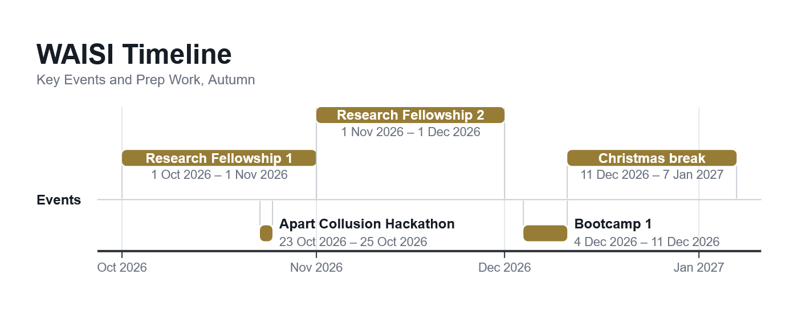

Events
What's coming up this term. Dates can shift — the newsletter and Discord will always have the latest. Apply or register for events here.

Want to take part?
The research fellowship and bootcamp are run in small cohorts, so they have a short application — see the Get Involved page. For hackathons and anything else, keep an eye on the newsletter or get in touch.